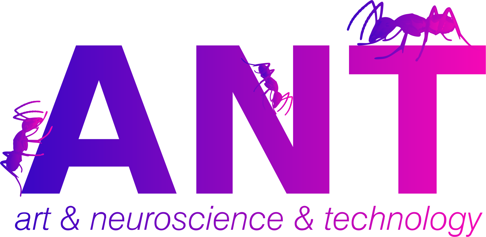

About me
“I'm one of those regular weird people.” - Janis Joplin
I am passionated about Machine Learning and very interested in what interdisciplinary teams are able to build. Specially in how art, science and technology can be integrated.
I am an active member of the machine learning community, sharing knowdlege and mentoring. I have talked in multiple meetups and conferences, including at WDLA Summit in New York. I have my own blogpost as well as I have been mentioned in several articles. In addition, I recently won the 'Globant Awards' for all my contributions for empowering girls and teens into STEAM.
You can reach me at email or through social media at the links below:
Top Initiatives
|  | ANT |
 |
Girls in Tech Uruguay |